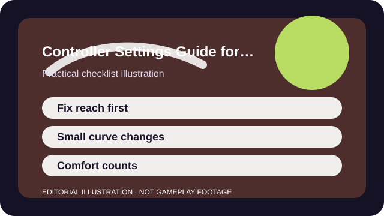

QUICK ANSWER
The short version
Fix reach and drift issues first, then make small response changes, and keep the setting long enough to judge it in normal play.
Controller settings usually go wrong in two ways: players leave obvious comfort problems unsolved, or they copy a high-level profile that assumes a different game, stick feel, hand size, or grip style. Both routes create frustration that looks like a skill problem.
A useful controller setup makes common actions easier to repeat. It does not need to look impressive on paper or match what a creator posted last night.

CHECKLIST
What to confirm before you change anything
- Save or photograph the current layout before you change anything.
- Identify the real issue: stick drift, over-aiming, awkward button reach, fatigue, or camera speed.
- Check whether vibration, motion settings, or hold-versus-toggle options are distracting you.
- Use one repeatable training or low-pressure mode to compare changes.
- Keep a note of any remap that reduces hand strain even if it is not a popular layout.
Many controller problems are ergonomic before they are competitive. If a button is hard to reach or the stick never truly centers, no response curve can fully rescue it.
SCENARIO
When you keep over-correcting and misfiring abilities under pressure
A lot of new players think they need a dramatic sensitivity shift when the real problem is layout conflict. They are lifting a thumb from the stick at bad moments, squeezing a trigger too late, or fighting drift that forces constant micro-corrections.
Once those reach or hardware issues are reduced, smaller camera changes become easier to evaluate. You stop testing a dozen variables at once and start seeing which adjustment actually improved control.
PROCESS
A repeatable way to work through it
Eliminate hardware noise first
If the stick drifts or a trigger feels unreliable, set a sane dead zone or fix the hardware path before chasing fine tuning.
Solve reach and layout conflicts
Move high-frequency actions to comfortable buttons before you touch advanced response options.
Adjust response in small steps
Tiny changes to look speed, dead zone, or aim curve tell you more than dramatic jumps.
Test in a role you actually play
A setting only matters if it works while you manage the real actions and pressure of your preferred mode.
Once a layout solves a real problem, protect it from impulse editing. Muscle memory needs stability more than it needs novelty.
COMMON MISTAKES
What usually makes the problem worse
Copying a pro response curve blindly
Top players optimize for their game, hardware, and hand habits—not yours.
Setting dead zones unrealistically low
A tiny dead zone can feel precise for a minute and exhausting for a whole night if the stick never fully settles.
Ignoring fatigue because the setup is technically faster
A good setting that hurts to use is not actually good for most players.
SUCCESS CRITERIA
How to know the change actually worked
- You misfire fewer abilities or accidental jumps because the layout matches your reach.
- Camera adjustments feel easier to predict rather than either sticky or wild.
- Longer sessions create less hand tension or thumb panic.
- You can keep the profile stable for several days without constant doubt.
The right controller setup feels ordinary during a match. That is success: your attention returns to decisions because the hardware stops demanding so much of it.
SOURCES AND LIMITS
Where to verify live details
- Controller quality varies, so two people using the same numbers may still get different results.
- Aim assist and response options are deeply game-specific.
- Persistent pain or numbness is a health issue and should not be treated as a pure settings experiment.
Menu names, defaults, and device behavior can change after updates. Use the linked official support surfaces for the current live details and keep this guide for the process around them.